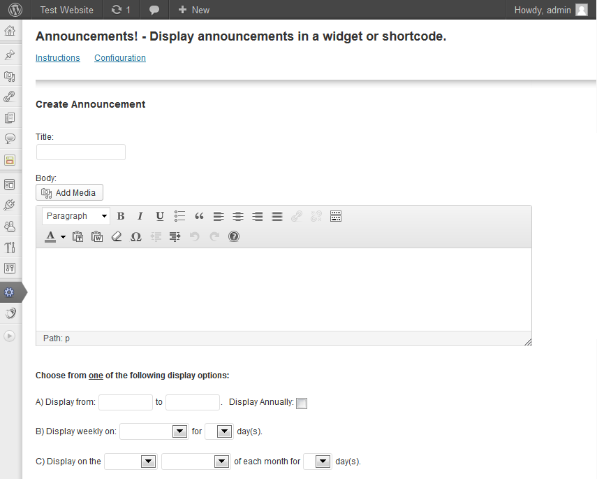
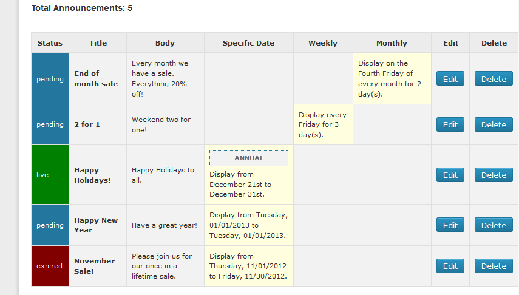
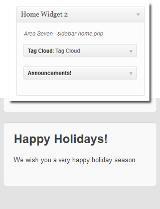
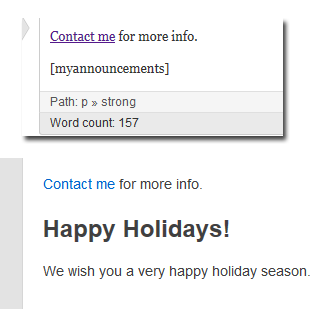

“Announcements!” Documentation by “Jerry Gonzalez”
“Announcements!”
Created: 12/05/2012
By: Jerry Gonzalez
CodeCanyon: link
Website: link
Thank you for purchasing my plugin. If you have any questions that are beyond the scope of this documentation, please feel free to email via my user page contact form here. Thank you!
Table of Contents
- Introduction
- Creating Announcements
- Editing Announcements
- Deleting Announcements
- Using the Widget
- Using a Shortcode
- Configuration
- Deactivate / Delete
A) Introduction - top
Announcements! allows you to schedule announcements to appear on specific dates. Its great for sales and event announcements or holiday and birthday greetings.
Announcements that you create can appear in both a Widget and a ShortCode.
You have 4 options for scheduling your announcements.
- Display announcements using start and end dates.
- Display announcements annually.
- Display announcements weekly.
- Display announcements monthly.
Also included are options to set a custom title CSS class and HTML tag. This way you can achieve the same look of the other widgets in your template.
Let's get started!
B) Creating Announcements - top
In the WordPress administration area click the Announcements! link in the left menu an you will see the following form:
FORM

Follow these steps to create your announcement.
- Input a title for your announcement.
- Input your body text. The editor allows you to style your text as desired. You may also add links and images. This is the same editor that you use when you create Posts and Pages so if you need more help please refer to the WYSIWYG editor ducumentation offered by WordPress.
- Now that your title and body text has been created you have four options to choose from for displaying your announcement.
Dates Option: Choose a start date and an end date. The Start date is the day that your announcement will first appear in the Widget or Shortcode. It will start at 12:00am on the start date and stop at midnight on the end date. Tip: To show your announcement for only one day choose the same start date and end date.
Annual Option: Choose a start date and an end date and check the "Display Annually" box. It does not matter what year you choose because the system will ignor the year and display the announcement every year on the month and day that you have chosen (e.g. 1/1/2012 will appear on January 1st every year).
Weekly Option: Choose the day of the week for your announcement to first appear. Choose how many days you would like it to remain visible. For example if you choose Friday for 3 days it will appear every Friday at 12:01AM and stay up until midnight on Sunday. Tip: Choose 1 day if you wish to show it for only one day (e.g. Friday for 1 day).
Monthly Option: Choose the day of the month for your announcement to first appear. Choose how many days you would like it to remain visible. For example, if you choose the second Friday for 3 days it will appear every month on the second Friday at 12:01AM and stay up until midnight on Sunday. Tip: Choose 1 day if you wish to show it for only one day (e.g. Second Friday for 1 day).
- Click the Save button. Your new announcement is now in the queue and will appear in the Widget or Shortcode on its start date. See the Sample Queue below.
SAMPLE QUEUE

C) Editing Announcements - top
To edit an existing announcement simply click the Edit button in the queue. Your announcement will now be in the form ready for editing. You can now edit all facets of the announcement including the title, body and display option. Click Save to update the announcement. To cancel your edit simply move on to something else without clicking Save.
D) Deleting Announcements - top
To delete an existing announcement simply click the Delete button in the queue. A confirmation box will appear giving you one chance to confirm your desire to delete the announcement or cancel and retain the announcement. Warning, deletions are final.
If your template is Widget Enabled you will be able to use a Widget to display your announcements. Here's how to set up your Announcements! Widget.
- Go to the Wordpress administration area.
- In the main left menu go to Appearance and then Widgets.
- In the Available Widgets section you will see the Announcements! Widget. Drag it to the sidebar where you want it to appear.
WIDGET

For more information on using Widgets see the documentaion.
F) Using a Shortcode - top
To have announcements appear on a post or page type the shortcode [myannouncements] somewhere within the text. Type is exactly as you see it, with the brackets.
SHORTCODE

For more information on using Shortcodes see the documentation.
Note: You can use the Widget and the Shortcode at the same time. However the will both use the same CSS title class and HTML tag that you set in the Configuration menu.
G) Configuration - top
It is important to adjust a few settings before you put Announcements! into use. This will ensure that the announcements appear as scheduled and that they look good on the website.
Click the Configuration link. The configuration panel will appear.
- Timezone: This plugin relies on knowing the correct time so make sure your Timezone is correct. The time stamp that you see was created the moment you entered the admin area and does not self-update so the time may be slightly off. This is normal. Reload this page and immediately look at the time stamp to determine if it is correct. If necessary, go to WordPress settings to adjust your Timezone.
- Title CSS Class: The default Title CSS class is widget-title. You can use that or input a custom class. When inputting a new class do not use a period before the class name. To use your new class be sure to add that new class to your CSS style sheet. To match the style of the other widgets on your website simply input the same CSS title class that they use.
- Title HTML TAG: The default Title tag is h3. You can use that or choose a new Tag (h1 thru h6). To match the look of the other titles on your site you should use the same tag. Experiment to find the one that looks right to you.
H) Deactivate / Delete - top
You have two options for removing the plugin from your system.
- Deactivate: Turns off the plugin but retains all of your data. The next time you activate it all of your announcements will reappear.
- Delete: Removes the plugin from your server and permanantly deletes all of your announcements and options.
Once again, thank you so much for purchasing this plugin. As I said at the beginning, I'd be glad to help you if you have any questions relating to this plugin. No guarantees, but I'll do my best to assist.
Jerry
Go To Table of Contents